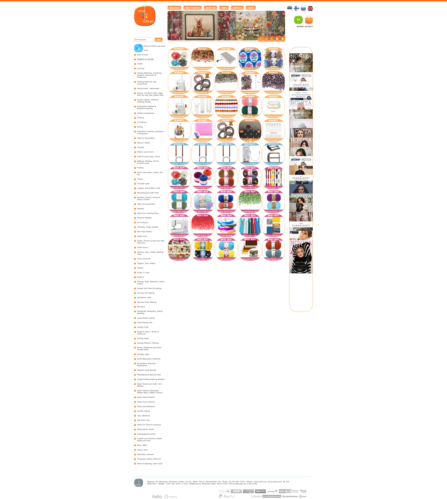

Karnaluks redesign
01
Reimagining a craft supply shop to feel more like an inspiring studio — shifting from a product catalog into a place that supports inspiration, creativity, and reflection.
CONTEXT
Karnaluks is a craft supply store with a wide range of hobbies; the physical shop is loved, but the website felt purely transactional and overwhelming.
GOAL
Rethink the website through emotional design — from catalog to a place that supports inspiration, creativity, and reflection.
WHAT I DESIGNED


More about the process
PROCESS
Four moves
Four moves, from technical browsing to reflection — prototyped in Figma and Lovable so the tone could be tested early.
Conversational filters for desired outcomes and tactile preferences — not only composition.
Homepage leads with exploration; a short quiz routes to mood boards, fabrics, Pinterest, and peer projects.
Real customer work on product pages; what you can make with each material.
Inspiration Diary — save boards, note projects, and see preferences accrue over time.

RESEARCH
The original site leaned on dense category cards and long product lists with little filtering.
Organization assumed technical knowledge — hard for beginners; hierarchy and readability suffered.
An OOUX analysis mapped core flows and friction.
I also ran a small embodied study (cooking — outside my comfort zone) to notice how starting points, play, and imagining an outcome shape motivation.
Key issues and insights
KEY ISSUES
INSIGHTS
Problem and outcomes
PROBLEM
KEY OUTCOMES
KEY IDEA
A craft store is more than a list of products — it's a starting point for someone's creative journey.